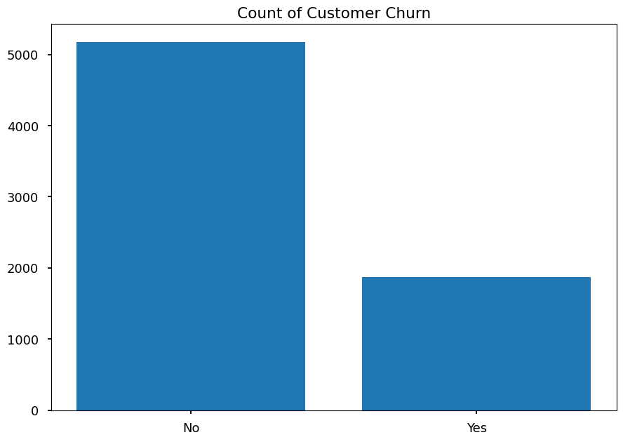
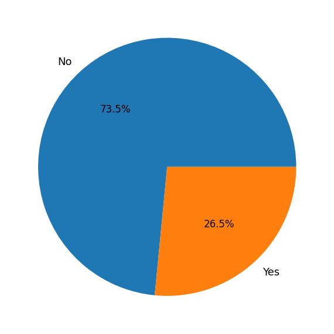
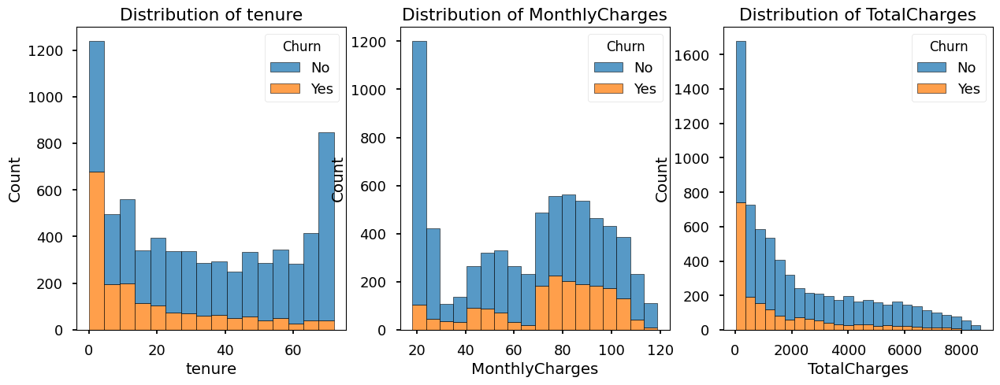
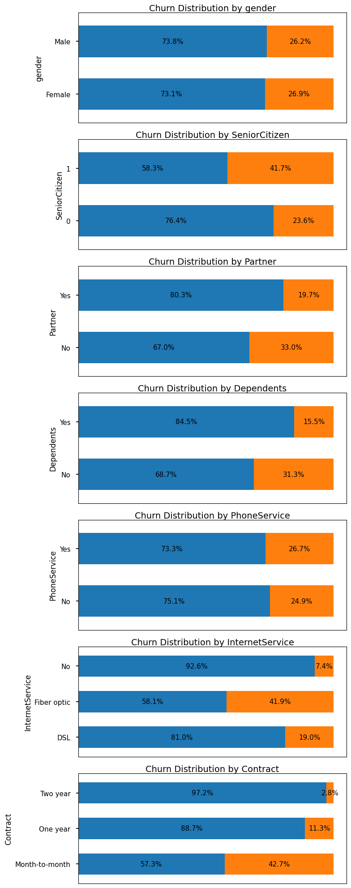
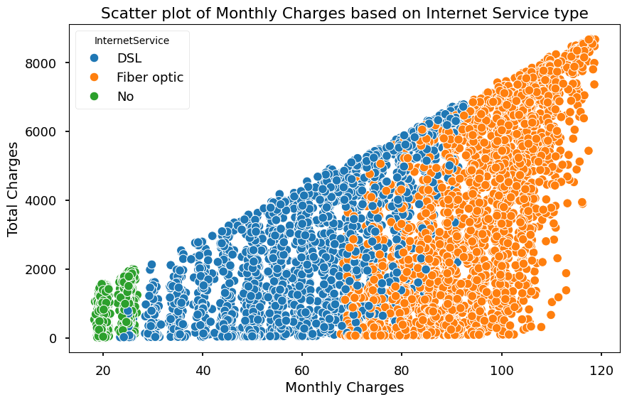
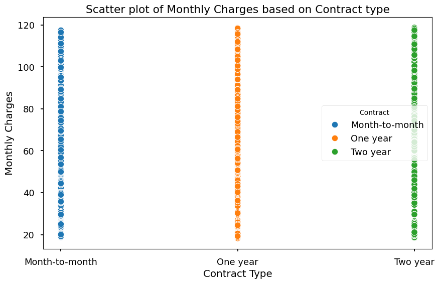
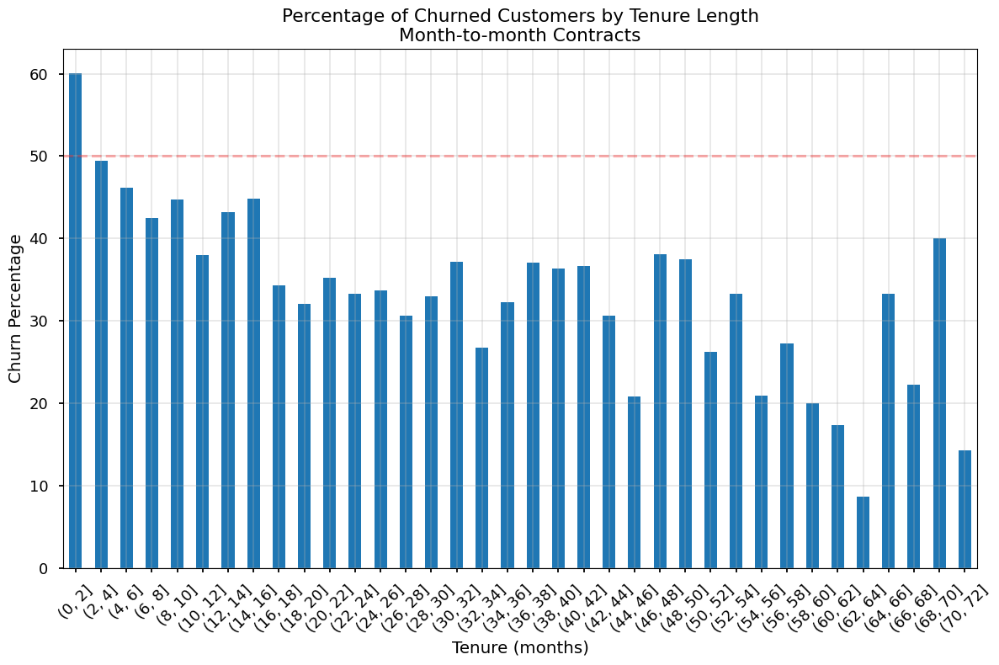
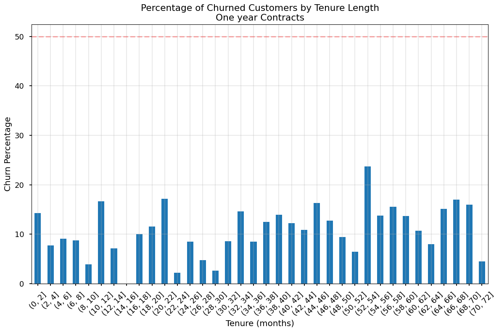
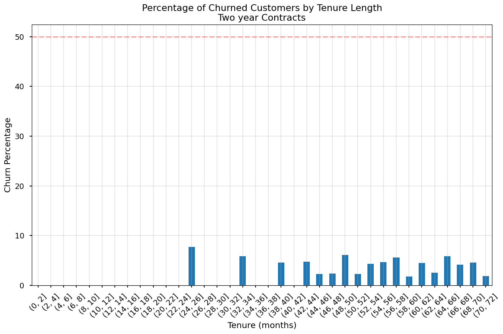

import pandas as pd
import numpy as np
import matplotlib.pyplot as plt
import seaborn as sns
from pathlib import PathTelco Churn Analysis
Telco Churn Analysis
Import necessary libraries & load data
file = Path("__file__").parent / "telco-customer-churn.csv"
df = pd.read_csv(file)
# plt.style.use('seaborn-v0_8-talk')Initial Data Exploration
df.info()<class 'pandas.core.frame.DataFrame'>
RangeIndex: 7043 entries, 0 to 7042
Data columns (total 21 columns):
# Column Non-Null Count Dtype
--- ------ -------------- -----
0 customerID 7043 non-null object
1 gender 7043 non-null object
2 SeniorCitizen 7043 non-null int64
3 Partner 7043 non-null object
4 Dependents 7043 non-null object
5 tenure 7043 non-null int64
6 PhoneService 7043 non-null object
7 MultipleLines 7043 non-null object
8 InternetService 7043 non-null object
9 OnlineSecurity 7043 non-null object
10 OnlineBackup 7043 non-null object
11 DeviceProtection 7043 non-null object
12 TechSupport 7043 non-null object
13 StreamingTV 7043 non-null object
14 StreamingMovies 7043 non-null object
15 Contract 7043 non-null object
16 PaperlessBilling 7043 non-null object
17 PaymentMethod 7043 non-null object
18 MonthlyCharges 7043 non-null float64
19 TotalCharges 7043 non-null object
20 Churn 7043 non-null object
dtypes: float64(1), int64(2), object(18)
memory usage: 1.1+ MBdf.head()| customerID | gender | SeniorCitizen | Partner | Dependents | tenure | PhoneService | MultipleLines | InternetService | OnlineSecurity | ... | DeviceProtection | TechSupport | StreamingTV | StreamingMovies | Contract | PaperlessBilling | PaymentMethod | MonthlyCharges | TotalCharges | Churn | |
|---|---|---|---|---|---|---|---|---|---|---|---|---|---|---|---|---|---|---|---|---|---|
| 0 | 7590-VHVEG | Female | 0 | Yes | No | 1 | No | No phone service | DSL | No | ... | No | No | No | No | Month-to-month | Yes | Electronic check | 29.85 | 29.85 | No |
| 1 | 5575-GNVDE | Male | 0 | No | No | 34 | Yes | No | DSL | Yes | ... | Yes | No | No | No | One year | No | Mailed check | 56.95 | 1889.5 | No |
| 2 | 3668-QPYBK | Male | 0 | No | No | 2 | Yes | No | DSL | Yes | ... | No | No | No | No | Month-to-month | Yes | Mailed check | 53.85 | 108.15 | Yes |
| 3 | 7795-CFOCW | Male | 0 | No | No | 45 | No | No phone service | DSL | Yes | ... | Yes | Yes | No | No | One year | No | Bank transfer (automatic) | 42.30 | 1840.75 | No |
| 4 | 9237-HQITU | Female | 0 | No | No | 2 | Yes | No | Fiber optic | No | ... | No | No | No | No | Month-to-month | Yes | Electronic check | 70.70 | 151.65 | Yes |
5 rows × 21 columns
High-level overview of the data
churn = df['Churn'].value_counts()
plt.title('Count of Customer Churn')
plt.bar(churn.index, churn.values)
pct_churn = df['Churn'].value_counts(normalize=True)
plt.pie(pct_churn, labels=pct_churn.index, autopct='%1.1f%%')([<matplotlib.patches.Wedge at 0x149c65450>,
<matplotlib.patches.Wedge at 0x149c65810>],
[Text(-0.7393678155529122, 0.8144539479458093, 'No'),
Text(0.7393680809356543, -0.8144537070291521, 'Yes')],
[Text(-0.40329153575613386, 0.4442476079704414, '73.5%'),
Text(0.40329168051035685, -0.44424747656135566, '26.5%')])
Understanding the data that causes churn
Numeric Features
numerical_features = ['tenure', 'MonthlyCharges', 'TotalCharges']
fig, axes = plt.subplots(1, 3, figsize=(15, 5))
for i, feature in enumerate(numerical_features):
if feature == 'TotalCharges':
df[feature] = pd.to_numeric(df[feature], errors='coerce') # Convert to numeric
sns.histplot(data=df, x=feature, hue='Churn', multiple="stack", ax=axes[i])
axes[i].set_title(f'Distribution of {feature}')
categorical_features = ['gender', 'SeniorCitizen', 'Partner', 'Dependents', 'PhoneService', 'InternetService', 'Contract']
fig, axes = plt.subplots(7, 1, figsize=(8, 20))
axes = axes.flatten()
plt.rcParams.update({'font.size': 12}) # Increase base font size
for i, feature in enumerate(categorical_features):
# Calculate percentages
percentages = (df.groupby(feature)['Churn']
.value_counts(normalize=True)
.unstack()
.mul(100))
# Create horizontal stacked bars
percentages.plot(kind='barh',
stacked=True,
ax=axes[i],
legend=False,
width=0.6) # Changed from height to width
# Customize the plot
axes[i].set_title(f'Churn Distribution by {feature}', fontsize=14, pad=-30)
axes[i].set_ylabel(feature, fontsize=12)
# Add percentage labels on the bars
for c in axes[i].containers:
axes[i].bar_label(c, fmt='%.1f%%', label_type='center', fontsize=11)
# Remove x-axis percentage labels
axes[i].set_xticks([])
# Add border around the subplot
for spine in axes[i].spines.values():
spine.set_visible(True)
# Make tick labels larger
axes[i].tick_params(axis='both', which='major', labelsize=11)
# Adjust plot to reduce white space
axes[i].margins(y=0.15) # Reduce vertical margins
# Remove empty subplots
for j in range(i+1, len(axes)):
fig.delaxes(axes[j])
plt.tight_layout()
plt.show()
Some more detailed analysis
plt.figure(figsize=(10, 6))
sns.scatterplot(data=df, x='MonthlyCharges', y='TotalCharges', hue='InternetService')
plt.title('Scatter plot of Monthly Charges based on Internet Service type')
plt.xlabel('Monthly Charges')
plt.ylabel('Total Charges')
plt.show()
plt.figure(figsize=(10, 6))
sns.scatterplot(data=df, x='Contract', y='MonthlyCharges', hue='Contract')
plt.title('Scatter plot of Monthly Charges based on Contract type')
plt.xlabel('Contract Type')
plt.ylabel('Monthly Charges')
plt.show()
def plot_churn_by_tenure(data, contract_type):
# Create the bins
bins = np.arange(0, data['tenure'].max() + 2, 2) # +2 to include the last value
data['tenure_bin'] = pd.cut(data['tenure'], bins=bins)
# Calculate percentage of churned customers in each bin
churn_by_tenure = (data.groupby('tenure_bin')['Churn']
.value_counts(normalize=True)
.unstack())
plt.figure(figsize=(12, 8))
churn_by_tenure['Yes'].multiply(100).plot(kind='bar')
plt.title(f'Percentage of Churned Customers by Tenure Length\n{contract_type} Contracts')
plt.xlabel('Tenure (months)')
plt.ylabel('Churn Percentage')
plt.axhline(y=50, color='r', linestyle='--', alpha=0.3)
plt.grid(True, alpha=0.3)
plt.xticks(rotation=45)
plt.tight_layout()
plt.show()
# Print statistics
# print(f"\nChurn percentage by tenure bins for {contract_type} contracts:")
# print(churn_by_tenure['Yes'].multiply(100).round(1))
# Create three dataframes
monthly = df[df['Contract'] == 'Month-to-month']
one_year = df[df['Contract'] == 'One year']
two_year = df[df['Contract'] == 'Two year']: plot_churn_by_tenure(monthly, 'Month-to-month')/var/folders/rz/zcgcqm0x1bl9cj8slq9l2s1c0000gn/T/ipykernel_8425/642956251.py:7: FutureWarning: The default of observed=False is deprecated and will be changed to True in a future version of pandas. Pass observed=False to retain current behavior or observed=True to adopt the future default and silence this warning.
churn_by_tenure = (data.groupby('tenure_bin')['Churn']
plot_churn_by_tenure(one_year, 'One year')/var/folders/rz/zcgcqm0x1bl9cj8slq9l2s1c0000gn/T/ipykernel_8425/642956251.py:7: FutureWarning: The default of observed=False is deprecated and will be changed to True in a future version of pandas. Pass observed=False to retain current behavior or observed=True to adopt the future default and silence this warning.
churn_by_tenure = (data.groupby('tenure_bin')['Churn']
plot_churn_by_tenure(two_year, 'Two year') /var/folders/rz/zcgcqm0x1bl9cj8slq9l2s1c0000gn/T/ipykernel_8425/642956251.py:4: SettingWithCopyWarning:
A value is trying to be set on a copy of a slice from a DataFrame.
Try using .loc[row_indexer,col_indexer] = value instead
See the caveats in the documentation: https://pandas.pydata.org/pandas-docs/stable/user_guide/indexing.html#returning-a-view-versus-a-copy
data['tenure_bin'] = pd.cut(data['tenure'], bins=bins)
/var/folders/rz/zcgcqm0x1bl9cj8slq9l2s1c0000gn/T/ipykernel_8425/642956251.py:7: FutureWarning: The default of observed=False is deprecated and will be changed to True in a future version of pandas. Pass observed=False to retain current behavior or observed=True to adopt the future default and silence this warning.
churn_by_tenure = (data.groupby('tenure_bin')['Churn']
: Model building
# Prep data
# Convert columns to binary and create new lowercase columns
df['gender_male'] = (df.gender=='Male')
df['senior_citizen'] = (df.SeniorCitizen==1)
df['partner'] = (df.Partner=='Yes')
df['dependents'] = (df.Dependents=='Yes')
df['phone_service'] = (df.PhoneService=='Yes')
df['multiple_lines'] = (df.MultipleLines=='Yes')
df['single_line'] = (df.MultipleLines=='No')
df['fiber_optic'] = (df.InternetService=='Fiber optic')
df['dsl'] = (df.InternetService=='DSL')
df['online_security'] = (df.OnlineSecurity=='Yes')
df['online_backup'] = (df.OnlineBackup=='Yes')
df['device_protection'] = (df.DeviceProtection=='Yes')
df['tech_support'] = (df.TechSupport=='Yes')
df['streaming_tv'] = (df.StreamingTV=='Yes')
df['streaming_movies'] = (df.StreamingMovies=='Yes')
df['month_to_month'] = (df.Contract=='Month-to-month')
df['one_year'] = (df.Contract=='One year')
df['two_year'] = (df.Contract=='Two year')
df['paperless_billing'] = (df.PaperlessBilling=='Yes')
df['electronic_check'] = (df.PaymentMethod=='Electronic check')
df['mailed_check'] = (df.PaymentMethod=='Mailed check')
df['bank_transfer'] = (df.PaymentMethod=='Bank transfer (automatic)')
df['credit_card'] = (df.PaymentMethod=='Credit card (automatic)')
df["total_charges"] = pd.to_numeric(df.TotalCharges, errors='coerce').fillna(0)
df['monthly_charges'] = df.MonthlyCharges
df['tenure'] = df.tenure
df['churn'] = (df.Churn=='Yes')
# Drop all original columns
columns_to_drop = ['customerID', 'gender', 'SeniorCitizen', 'Partner', 'Dependents',
'PhoneService', 'MultipleLines', 'InternetService', 'OnlineSecurity',
'OnlineBackup', 'DeviceProtection', 'TechSupport', 'StreamingTV',
'StreamingMovies', 'Contract', 'PaperlessBilling', 'PaymentMethod',
'TotalCharges', 'MonthlyCharges', 'Churn']
df.drop(columns=columns_to_drop, inplace=True)df.head()| tenure | gender_male | senior_citizen | partner | dependents | phone_service | multiple_lines | single_line | fiber_optic | dsl | ... | one_year | two_year | paperless_billing | electronic_check | mailed_check | bank_transfer | credit_card | total_charges | monthly_charges | churn | |
|---|---|---|---|---|---|---|---|---|---|---|---|---|---|---|---|---|---|---|---|---|---|
| 0 | 1 | False | False | True | False | False | False | False | False | True | ... | False | False | True | True | False | False | False | 29.85 | 29.85 | False |
| 1 | 34 | True | False | False | False | True | False | True | False | True | ... | True | False | False | False | True | False | False | 1889.50 | 56.95 | False |
| 2 | 2 | True | False | False | False | True | False | True | False | True | ... | False | False | True | False | True | False | False | 108.15 | 53.85 | True |
| 3 | 45 | True | False | False | False | False | False | False | False | True | ... | True | False | False | False | False | True | False | 1840.75 | 42.30 | False |
| 4 | 2 | False | False | False | False | True | False | True | True | False | ... | False | False | True | True | False | False | False | 151.65 | 70.70 | True |
5 rows × 27 columns
df.info()<class 'pandas.core.frame.DataFrame'>
RangeIndex: 7043 entries, 0 to 7042
Data columns (total 27 columns):
# Column Non-Null Count Dtype
--- ------ -------------- -----
0 tenure 7043 non-null int64
1 gender_male 7043 non-null bool
2 senior_citizen 7043 non-null bool
3 partner 7043 non-null bool
4 dependents 7043 non-null bool
5 phone_service 7043 non-null bool
6 multiple_lines 7043 non-null bool
7 single_line 7043 non-null bool
8 fiber_optic 7043 non-null bool
9 dsl 7043 non-null bool
10 online_security 7043 non-null bool
11 online_backup 7043 non-null bool
12 device_protection 7043 non-null bool
13 tech_support 7043 non-null bool
14 streaming_tv 7043 non-null bool
15 streaming_movies 7043 non-null bool
16 month_to_month 7043 non-null bool
17 one_year 7043 non-null bool
18 two_year 7043 non-null bool
19 paperless_billing 7043 non-null bool
20 electronic_check 7043 non-null bool
21 mailed_check 7043 non-null bool
22 bank_transfer 7043 non-null bool
23 credit_card 7043 non-null bool
24 total_charges 7043 non-null float64
25 monthly_charges 7043 non-null float64
26 churn 7043 non-null bool
dtypes: bool(24), float64(2), int64(1)
memory usage: 330.3 KBStandardize numerical columns
from sklearn.preprocessing import StandardScaler, MinMaxScaler
# Create a StandardScaler instance
scaler = StandardScaler()
# Select the columns to standardize
columns_to_scale = ['tenure', 'monthly_charges', 'total_charges']
# Apply scaling to the selected columns
df[columns_to_scale] = scaler.fit_transform(df[columns_to_scale])from sklearn.model_selection import train_test_split
from sklearn.linear_model import LogisticRegression
from sklearn.metrics import classification_report, confusion_matrix
from sklearn.ensemble import RandomForestClassifier
from xgboost import XGBClassifier
from imblearn.over_sampling import SMOTE
# Define features and target variable
X = df.drop(columns=['churn'])
# X = df.drop(columns=['churn'])
y = df['churn']
# Split the data into training and testing sets
X_train, X_test, y_train, y_test = train_test_split(X, y, test_size=0.2, random_state=42)
## Balance the training data (roughly equal number of churned and non-churned customers)
smote = SMOTE(random_state=42)
X_resampled, y_resampled = smote.fit_resample(X_train, y_train)
# Create and train the logistic regression model
model = LogisticRegression(max_iter=5000)
# model = XGBClassifier(learning_rate=0.01,max_depth = 3,n_estimators = 1000)
# model = RandomForestClassifier(max_depth=8, n_estimators=200, random_state=42)
model.fit(X_resampled, y_resampled)
# Make predictions
y_pred_orig = model.predict(X_test)
y_pred = model.predict_proba(X_test)
# Play around with the ROC threshold
y_pred = np.where(y_pred[:,0] < 0.70, 1, 0)
print(y_pred_orig[0:10])
# Evaluate the model
print(confusion_matrix(y_test, y_pred))
print(classification_report(y_test, y_pred))[ True False False True False False False False False False]
[[627 409]
[ 32 341]]
precision recall f1-score support
False 0.95 0.61 0.74 1036
True 0.45 0.91 0.61 373
accuracy 0.69 1409
macro avg 0.70 0.76 0.67 1409
weighted avg 0.82 0.69 0.70 1409